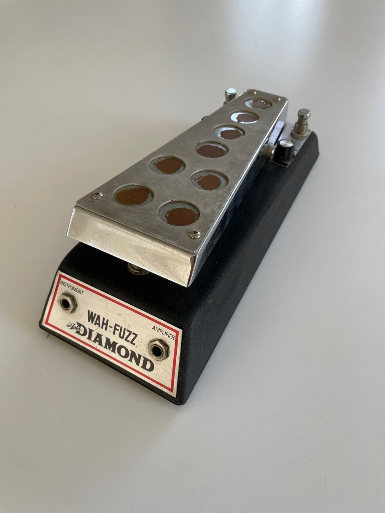
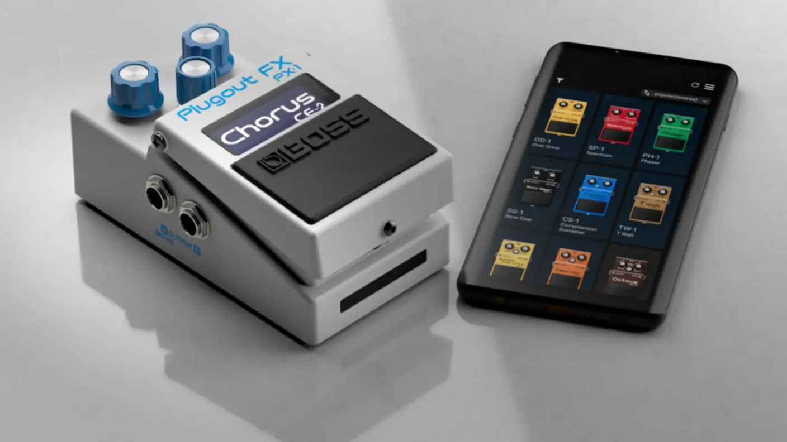
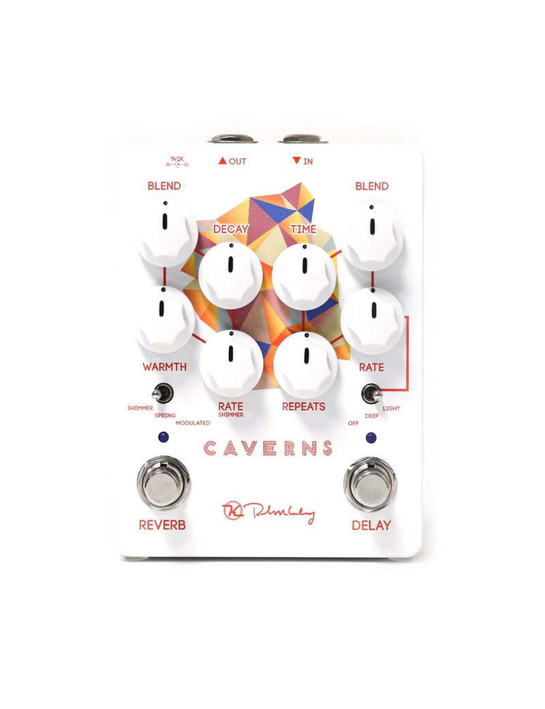
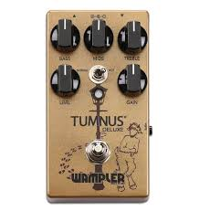

⚡ Pas le temps : le résumé 30 secondes
- 👑 Cry Baby GCB95 — la référence absolue depuis 1966. Le premier achat évident.
- 🇬🇧 Vox V847 — la brit-wah, plus chaude dans les médiums. Blues et rock anglais.
- 🎛️ Cry Baby 535Q — réglages Q, Freq et boost. La wah des perfectionnistes.
- ⚡ Morley Bad Horsie 2 — sans switch, activation optique. Signature Steve Vai.
C'était en 1966. Des ingénieurs de Thomas Organ Company bidouillaient un circuit pour imiter le souffle d'une trompette avec sourdine. Le résultat ne ressemblait à rien de connu — un filtre balayant les fréquences selon l'angle d'un potentiomètre. Brad Plunkett, l'ingénieur du projet, appuie sur la pédale prototype. Le son dit « waaah ». Et là, tout le monde dans la pièce comprend que quelque chose d'extraordinaire vient de naître.
Depuis ce jour, la wah-wah n'a jamais quitté les planches. Jimi Hendrix, Clapton, Slash, Metallica, les funkeux des années 70 — tous sont tombés sous le charme de cette pédale qui parle, qui chante, qui pleure. Parce qu'une wah bien dosée, c'est la voix humaine dans les cordes d'une guitare. Si tu montes ton premier pédalier, jette d'abord un œil à notre guide pour choisir ses pédales d'effets.
Les 4 Wah qui ont fait l'Histoire

1966 · La légende absolue
Cry Baby GCB95
Jim Dunlop
La référence mondiale depuis 1966. Circuit inducteur Fasel (made in Italy à l'origine), châssis en fonte, treadle robuste. Elle a le son légèrement sombre et vocal qui a fait craquer trois générations de guitaristes. Pas la plus polyvalente, mais la plus vraie.
🎸 Qui l'a utilisée ?
Jimi Hendrix et son Voodoo Child (Slight Return) — l'intro la plus célèbre de l'histoire de la wah. Eric Clapton sur White Room avec Cream. Difficile de citer un guitariste professionnel qui ne l'a pas eue sur son pedalboard un jour ou l'autre.

1967 · L'aristocrate britannique
Vox V847
Vox / Korg
L'autre grande famille de la wah. Le Vox V847 adopte un inducteur différent — plus chaud, plus articulé dans les médiums. Sa réponse est légèrement plus large que la Cry Baby, idéale pour les solos expressifs et les rythmiques funky. La brit-wah par excellence.
🎸 Qui l'a utilisé ?
Eric Clapton (Cream) utilisait le prototype Vox original. Jeff Beck en a fait une arme redoutable sur ses improvisations. La V847 reste la référence pour les aficionados du son britannique, pour qui la Cry Baby sonne trop américaine.

1992 · Le couteau suisse
Cry Baby 535Q
Jim Dunlop
La wah pour les obsessionnels du détail. Le réglage Q contrôle la largeur du balayage fréquentiel, le potentiomètre Freq détermine la zone d'action, et un boost optionnel de +15 dB donne une claque à l'ampli. Avec la 535Q, tu ne subis plus la wah — tu la sculptes.
🎸 Qui l'a utilisée ?
Kirk Hammett (Metallica) l'a adoptée pour ses solos signature — One, Enter Sandman, The Unforgiven. Sa puissance et sa précision chirurgicale en font la wah préférée des guitaristes metal et hard-rock qui veulent que leur solo coupe comme un rasoir.

1995 · La sans-switch
Bad Horsie 2
Morley
Steve Vai a exigé une wah sans switch mécanique — parce qu'il ne voulait pas cliquer. Résultat : un capteur électro-optique qui active l'effet dès que tu poses le pied dessus et le coupe dès que tu l'enlèves. Zéro bruit de pédale, engagement instantané. Une révolution pour les amateurs de jeu fluide.
🎸 Qui l'a utilisée ?
Steve Vai en a fait sa signature — conçue avec lui, pour lui. On l'entend sur pratiquement tous ses solos en live : For the Love of God, Tender Surrender. Elle est aussi devenue la wah de prédilection des shredders qui jouent vite et veulent un engagement sans hésitation.